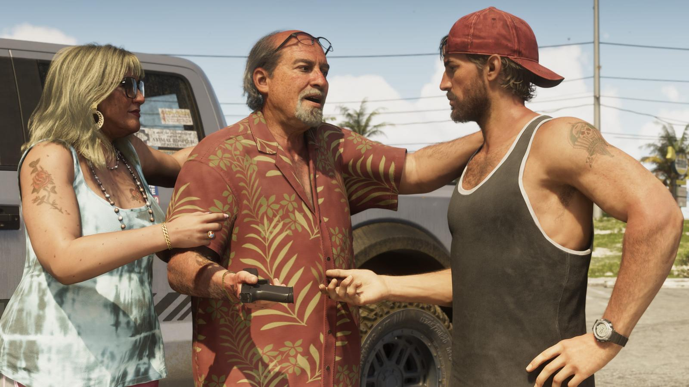
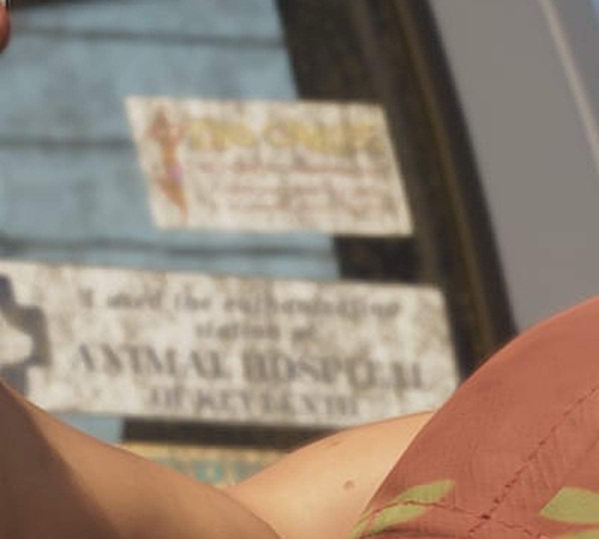
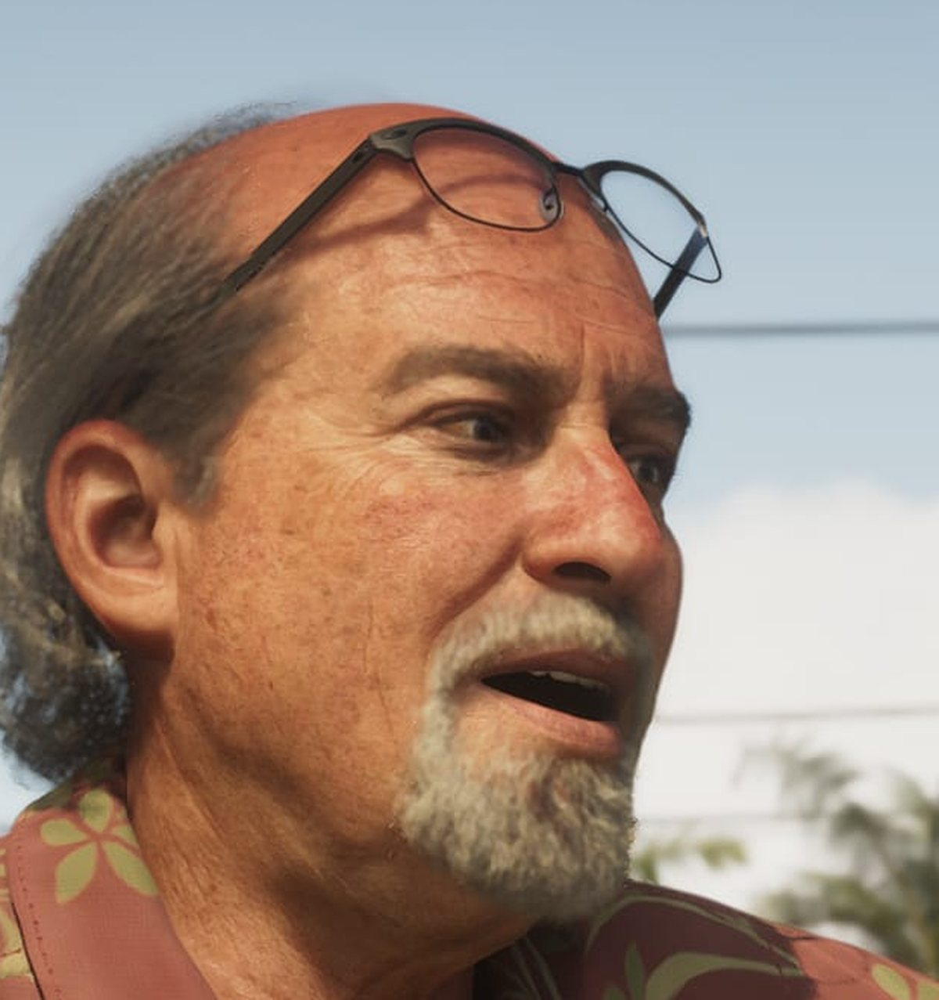
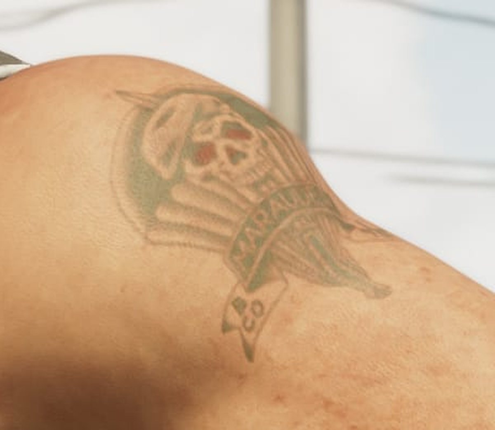
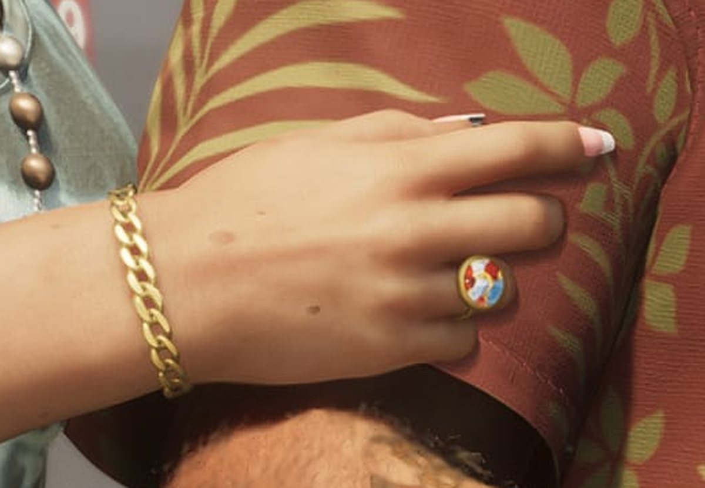
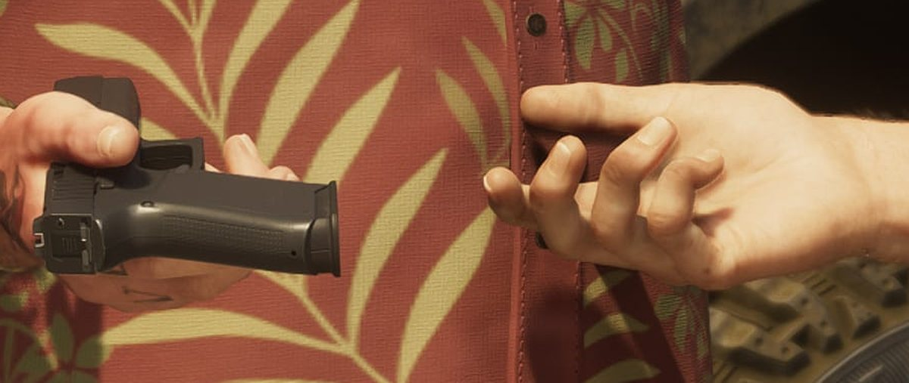
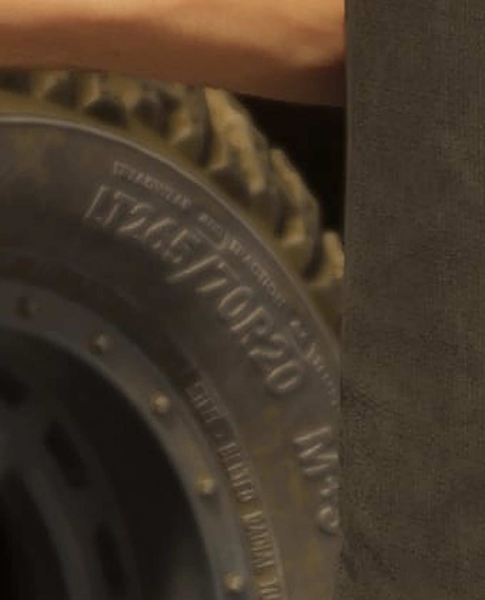

Разбор кадра: Брайан Хедер передаёт Джейсону пистолет
Обновлено:

- Официальный кадр Rockstar: Брайан Хедер, женщина рядом с ним и Джейсон у пикапа.
- В центре сцены — передача пистолета рукоятью вперёд.
- Мелкие детали: наклейки на стекле, татуировка, шины с реальной маркировкой.
- Всё, что не подтверждено, помечено как наша догадка.
Сцена
Солнце печёт асфальт, над головой гудят провода. Брайан хлопает тебя по плечу и говорит слишком много — как всегда, когда нервничает. Его жена держит его за руку, будто боится, что он передумает. А потом он протягивает тебе пистолет рукоятью вперёд. Ты уже знаешь: бесплатный дом в Кис был не бесплатным.
На первый взгляд — обычная сцена из жизни Флорида-Кис: пожилая пара, парень в кепке, пикап. Но в 4K этот кадр рассказывает о героях больше, чем абзац биографии. Разберём его на шесть деталей.
Кадр целиком
Нажмите на номер, чтобы перейти к увеличенному фрагменту.
6 деталей

1 Наклейки на заднем стекле
На стекле пикапа — две выцветшие наклейки. Нижнюю можно прочитать частично: крупными буквами «ANIMAL HOSPITAL» — «ветеринарная клиника», а ниже что-то вроде «OF KEY…». Верхняя — с силуэтом девушки в купальнике и оранжевой надписью, которую уже не разобрать. Такие наклейки — фирменный приём Rockstar: пародийные бренды и шутки размером в несколько пикселей. После релиза их наверняка можно будет рассмотреть вплотную.

2 Брайан объясняет «правила»
Очки для чтения задраны на лоб, рот открыт на полуслове, седая эспаньолка. Брайан Хедер явно что-то втолковывает Джейсону — и не похоже, что спокойно. По официальной биографии он контрабандист старой школы, который пускает Джейсона жить в своём доме в обмен на помощь с «делами». Кажется, это как раз инструктаж. Рубашка — в пальмовых листьях: так в Кис одевается человек, который никуда не спешит уже лет тридцать.

3 Татуировка на плече Джейсона
На левом плече Джейсона — выцветшая татуировка: череп, что-то похожее на крылья или купол парашюта и лента с надписью. Надпись не читается. Rockstar официально пишет, что Джейсон служил в армии, пытаясь уйти от бурной юности. Наша догадка: это армейская татуировка из тех времён. Подтверждения нет — ждём, расскажет ли об этом игра.

4 Кольцо, браслет и рука на плече
Блондинка в очках и майке-«варёнке» держит Брайана за руку — жест скорее успокаивающий, чем романтичный. На пальце крупное кольцо, на запястье золотой браслет-цепь, на плече татуировка с розой. Кто она, Rockstar в подписи к кадру не говорит. Наша догадка — Лори, третья жена Брайана, которая упоминается в его официальной биографии. Если так, семейный бизнес Хедеров — дело общее.

5 Передача пистолета
Главное действие кадра — в самом низу. Брайан держит пистолет за ствол, рукоятью к Джейсону, а тот уже тянет руку. Так передают оружие, когда доверяют — или когда хотят показать, кто здесь выдаёт инструменты. Модель похожа на современный полимерный пистолет, но точное название Rockstar не указывает, а мы не гадаем. Что известно об оружии в игре — Оружие в GTA 6: что известно.

6 Шины для болот
На боковине колеса читается маркировка LT265/70R20 и M+S. Это не выдумка художника, а реальный формат: LT — шина для лёгких грузовиков, 20 — диаметр диска в дюймах, M+S — «грязь и снег», всесезонная для бездорожья. Агрессивный протектор намекает, что пикап гоняют не только по асфальту. Rockstar прорисовала то, что никто не должен был разглядеть.
Что за спиной
Фон почти пустой — и это тоже информация. Бетонный столб с пучком проводов, пальмы, ровная дорога, трава у обочины, светлое небо без единой высотки. Ни неона, ни небоскрёбов: это явно не Вайс-Сити. Вместе с биографией Брайана (лодочная стоянка, «золотая эра» контрабанды в Кис) всё указывает на Leonida Keys. Официально место на кадре не подписано.
У Джейсона на руке — цифровые спортивные часы, у Брайана и его спутницы — золото. Мелочь, но показательная: Rockstar одевает персонажей по характеру. Практичный парень после армии — и люди, которые давно зарабатывают и не прячут этого.
Шина LT265/70R20 — реальный размер, который продаётся для полноразмерных пикапов. У Rockstar это давняя привычка: мелкий текст на вещах, который увидит только тот, кто остановит кадр и приблизит его в 4K. На нашем кадре таких мест минимум три — две наклейки и боковина колеса.
Что мы узнали
- Брайан — не просто «добрый хозяин дома»: он снабжает Джейсона оружием.
- Рядом с Брайаном — женщина, скорее всего Лори из его биографии (наша догадка).
- У Джейсона есть татуировка, похожая на армейскую — совпадает с его официальной историей (наша догадка).
- Rockstar прорисовывает мелкий текст: наклейки и маркировку шин можно прочитать.
Кто такие Брайан и остальные — в статье Второстепенные персонажи GTA 6. Предыдущий разбор — Разбор кадра: погоня на болотах Grassrivers. Как изменились герои по сравнению с GTA V — Герои GTA 5 и GTA 6: трое против двоих.
Источники: Официальный скриншот Rockstar Games (Brian Heder 04, 3840×2160); официальные биографии персонажей — Rockstar Games; маркировка шин — стандарт ETRTO/Tire and Rim Association.